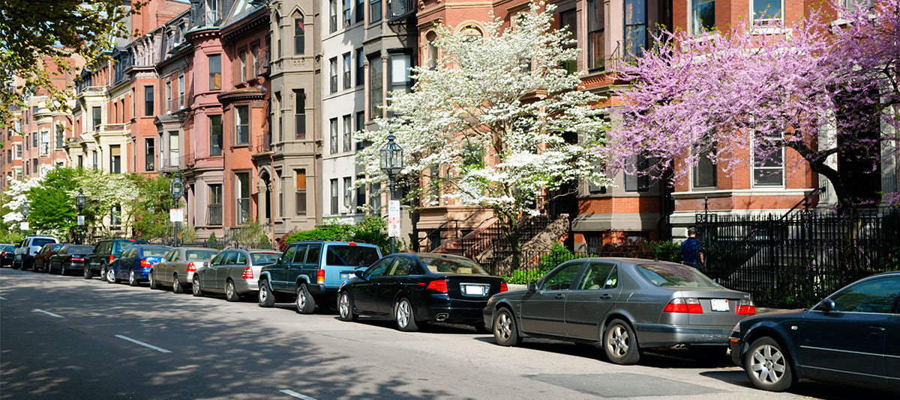
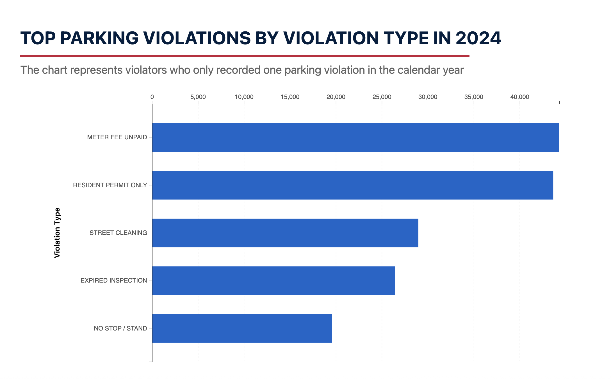
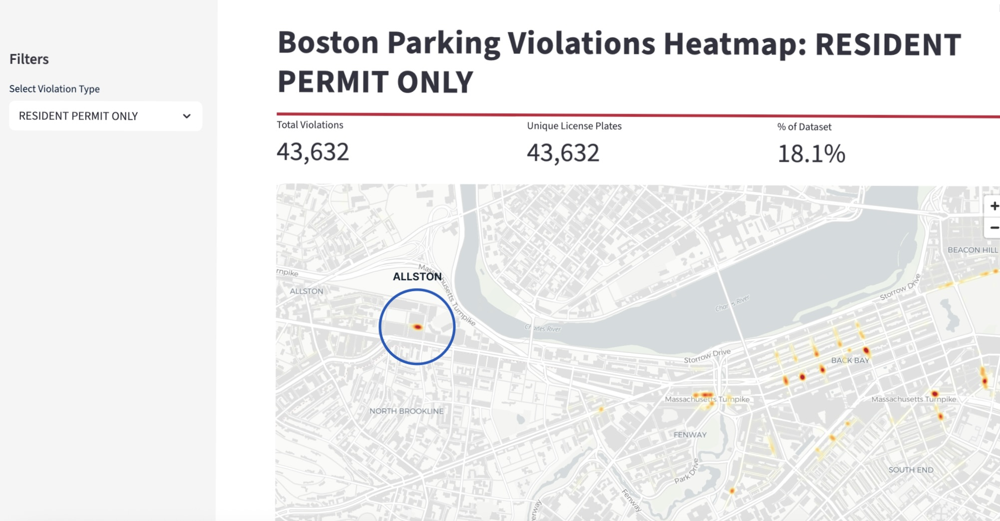
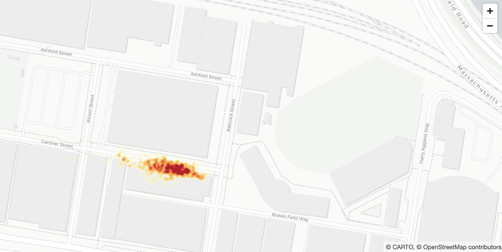
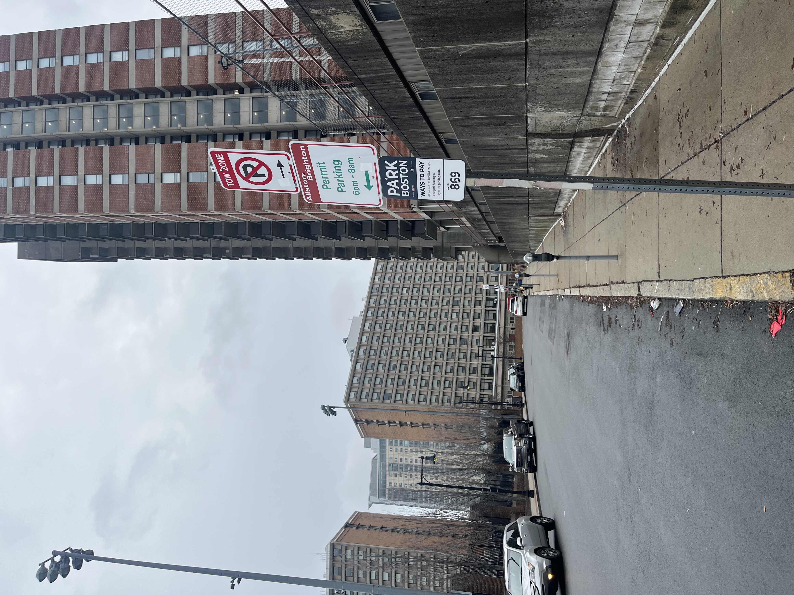
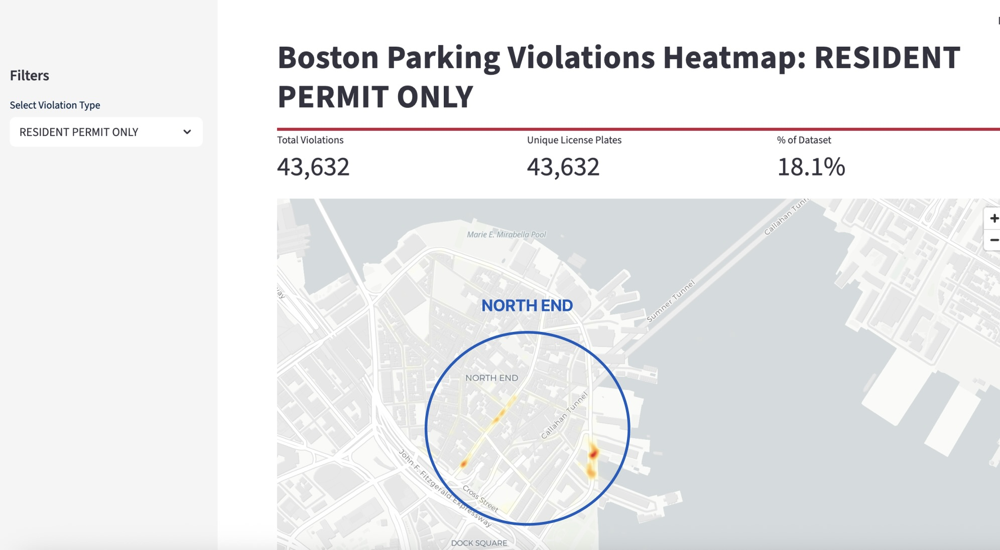
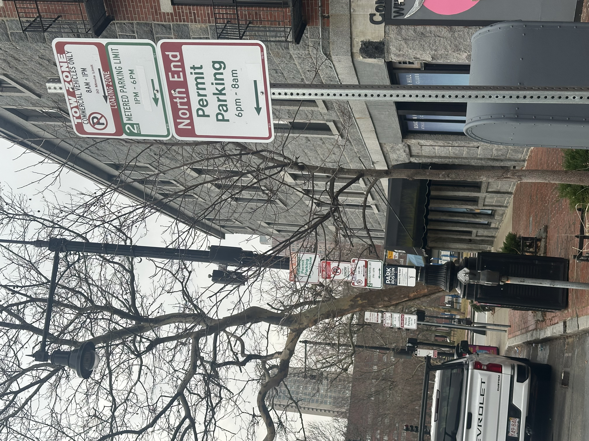
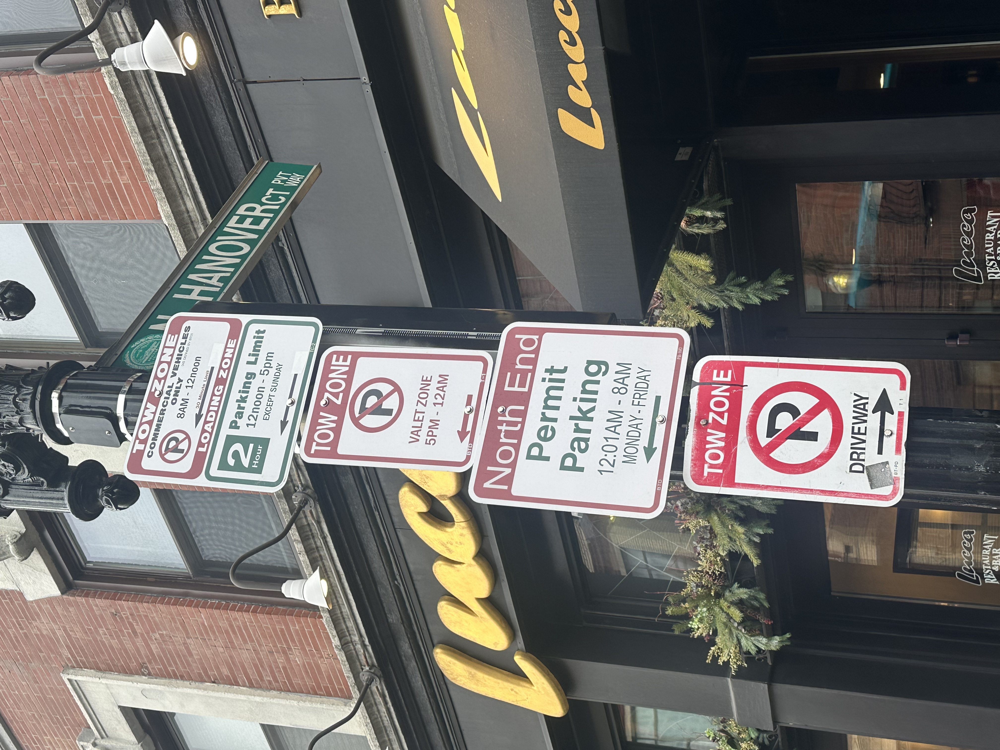
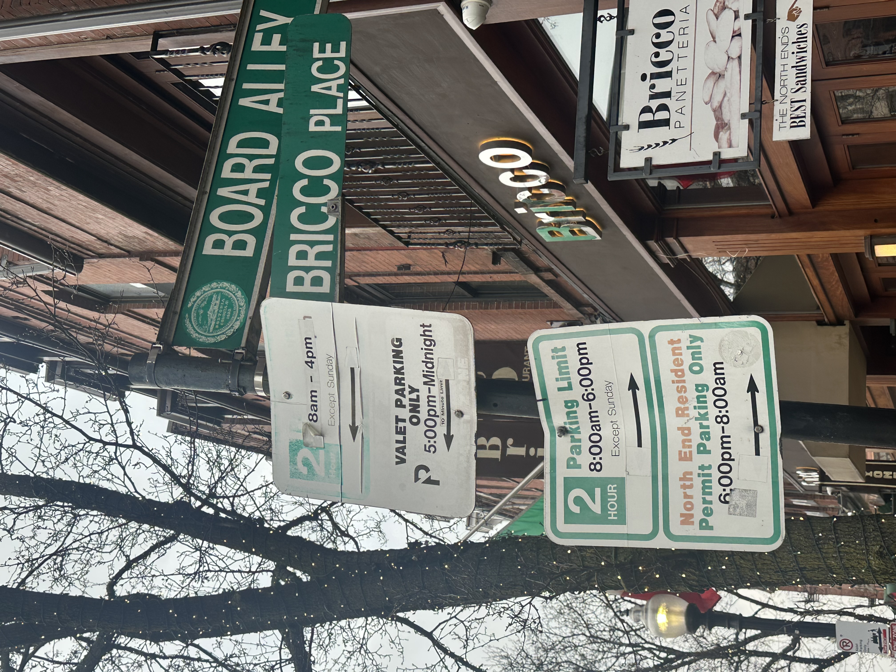
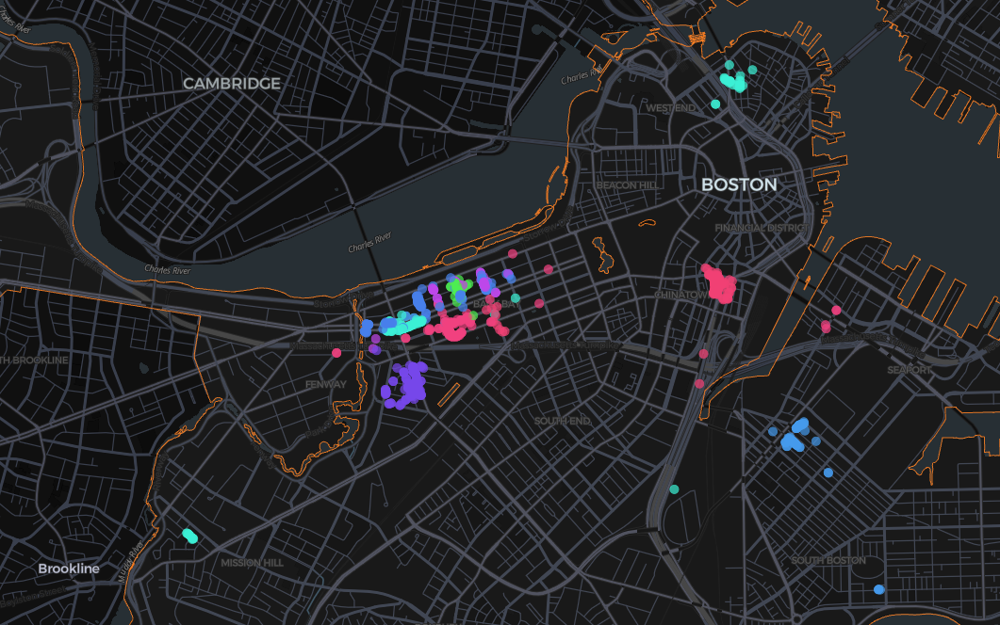

Using 2024 parking violation data, we identified where one-time offenders committed parking violations across Boston. To inform our analysis we calculated the top 5 most common parking violations issued to one-time offenders. The most common parking violation issued to one-time offenders was "Meter Fee Unpaid."
We were interested in understanding if one-time offenders were misunderstanding parking regulations. Because parking meters are not a common source of misunderstanding, we focused on the second most common violation; resident-permit only, and mapped out hotspots in Boston.
Parking Enforcement: Violation Hotspots
Distinguishing between areas where parking regulations are willfully ignored and where they may be misunderstood

WHERE DO ONE TIME OFFENDERS COMMIT PARKING VIOLATIONS?

Allston, MA - Gardner St
Based on the heatmap of resident permit only violations, we decided to conduct further exploratory analysis in Allston, MA. A team member traveled to Allston to observe parking signage in the area. We found that Gardner Street was near a Boston University athletic facility and next to a parking garage. The image captured showed that unclear signage and dense car traffic may have contributed to the high number of violations issued to one-time offenders.



North End - Hanover and Atlantic St
Applying the same methodology, we identified a resident-permit violation hotspot in the North End area of Boston. These violations were concentrated in two areas: Hanover St and Atlantic St. A team member visited the area and found that parking signage was confusing, with multiple signs stacked one upon another. In some cases the street signs were faded and difficult to read.




mapping out the top repeat offenders
To visualize violation patterns for drivers with high rates of parking violations we mapped the top ten repeat offenders. Each point color represents an individual driver. These drivers exhibited extremely localized behavior, committing the majority of their violations in specific neighborhoods. A large concentration of these violations occur in Back Bay. This pattern indicates that it is possible that persistent repeat offenders knowingly accept the risk of citation.

FINDINGS
- Street-level heat maps are a helpful tool for identifying parking violation hotspots
- Analyzing data for one-time offenders by violation type can reveal areas where parking regulations are potentially misunderstood.
- A mix of desk research and site visits can help validate whether violation hotspots are due to poor signage, proximity to
high-traffic areas, or other factors.